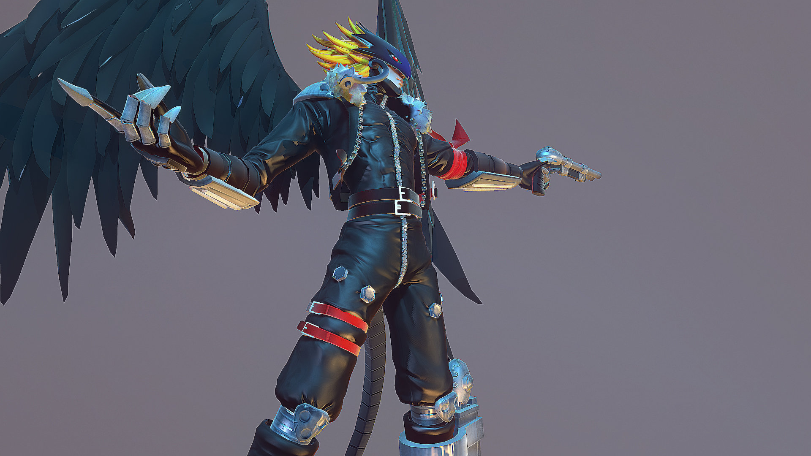

About Beelzemon
Beelzemon is an Evil Digimon. It is one of the "Seven Great Demon Lords", representing Venus and the sin of Gluttony. While it possesses the power to preside over the many Devil Digimon, it dares to observe a solitary existence. It is said that it could stand at the peak of the dark army, "Nightmare Soldiers", if it cared to, although it is also said that there exists a Demon Lord Digimon which surpasses even Beelzemon.
Beelzemon
Characteristics
- Beelzemon is an Evil Digimon
- He is one of the "Seven Great Demon Lords"
- He possesses the power to preside over the many Devil Digimon
- He is a dangerous fighter
Friends
Beelzemon has some awesome friends. Gallantmon is one of his best friend. He's an awesome digimon to look at as well. Click on the links below to read more about them: